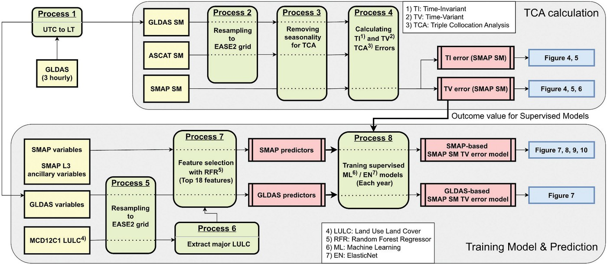
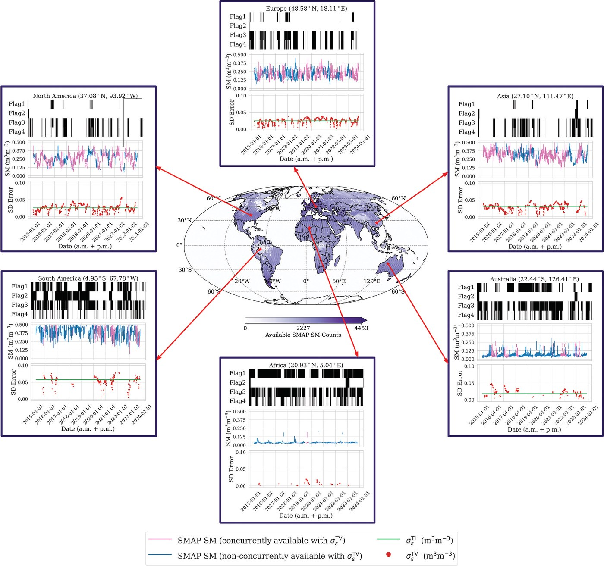
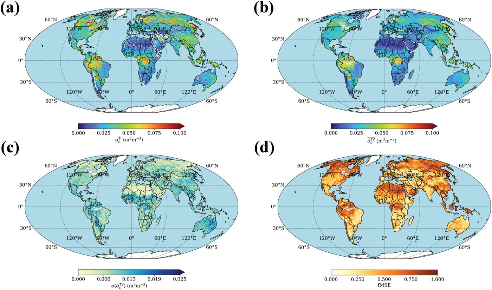
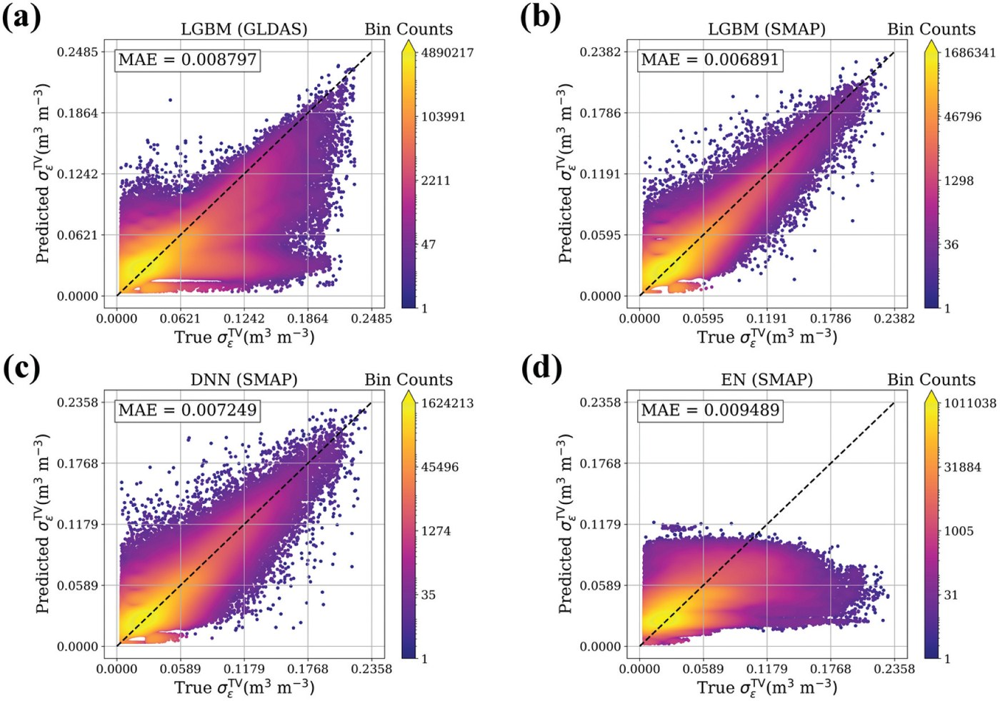
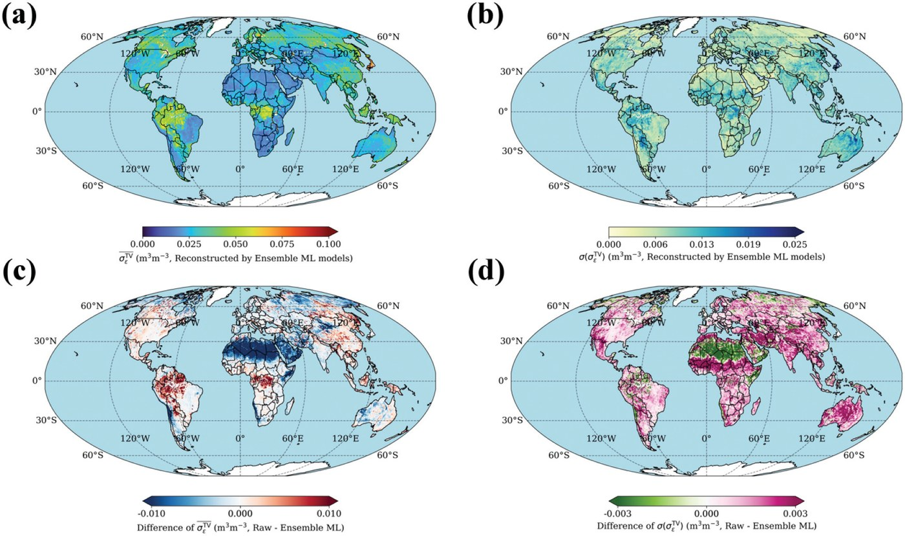
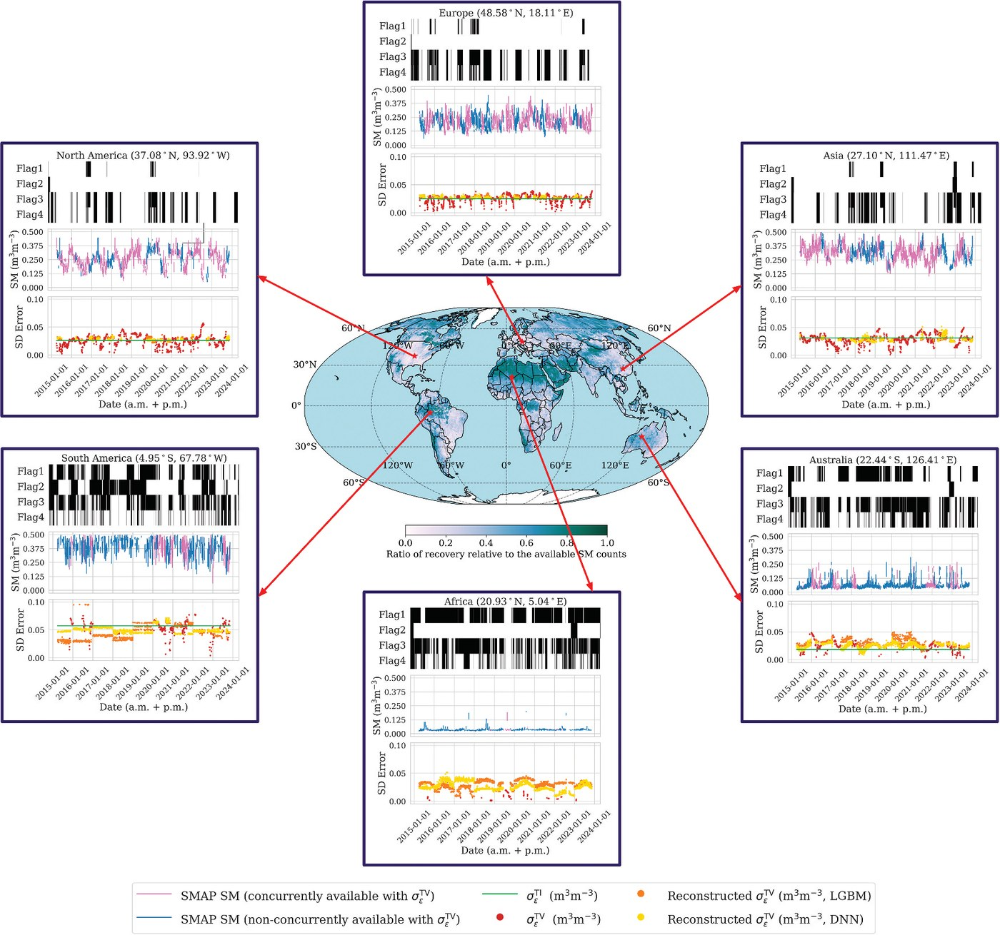

Data 2022 on Zenodo, doi:10.5281/zenodo.14850520; other years on requestPlease cite Kim et al. (2025), GIScience & Remote SensingResearch collaboration hyunglokkim@gist.ac.kr
The map cannot be drawn in this browser right now
The map is drawn with WebGL, the browser's graphics acceleration, and this browser is not providing it. Either it is switched off, or the browser has lost it: Chrome, for one, switches it off after its graphics process has failed several times, and keeps it off until it is restarted.
- Quit the browser completely and open it again. That usually brings it back.
- If it does not, switch on graphics (hardware) acceleration in the browser's settings. In Chrome it is under Settings, System: “Use graphics acceleration when available”.
- Or open this page in another browser.
The rest of the page does not need the map: the cards beside it, the figures from the paper below, and the Download, Use in code and About the data tabs.
No value
Click any land cell: the panel on the right shows its series for the selected year and the whole 2015–2023 record — soil moisture, the TCA error, the two reconstructions and the four flags, overpass by overpass. Each cell is 36 km; the map draws the cells as they are, without smoothing.
From the paper
How the error is estimated, how the gaps are filled, and how well — in plain words
No ground truth exists for soil moisture over a 36 km cell, so SMAP's error cannot be measured directly. Triple collocation compares three independent estimates of the same quantity (SMAP, the ASCAT scatterometer and the GLDAS land-surface model) and, from how they disagree, works out the random error of each without calling any of them the truth. The paper does this in a moving window so the error can change with the season, then trains models to supply the error on the overpasses where triple collocation cannot. The six figures below show the pieces.

1 · The workflow
GLDAS (3-hourly, UTC) is shifted to local time so that it lines up with SMAP's 6 a.m. and 6 p.m. overpasses; ASCAT (12.5 km) and GLDAS (0.25°) are resampled to SMAP's 36 km EASE-Grid 2.0; each series is deseasonalised by subtracting a 201-step moving average (100 days of a.m. plus p.m. steps, about a season), because background seasonality would hide the noise in the covariances. Triple collocation then runs on the three deseasonalised series, both over the whole record (a time-invariant error, one value per cell) and in a 201-step moving window with at least 25 common points (the time-variant error, one value per cell and overpass). The lower part of the chart is the machine-learning stage: features are chosen with a random forest, and a model is trained per year.

2 · Why the error is so often missing, and the four flags
Triple collocation needs its assumptions to hold and enough common data. Four flags mark the overpasses on which it does not deliver: flag 1, the correlation between the covariance terms is negative; flag 2, fewer than 25 common points in the window; flag 3, the fractional mean squared error falls outside 0–1; flag 4, a negative error variance. At the six points in the figure (one per continent) the black marks in the top strip of each panel show how often that happens: in the Amazon and in the Sahara almost all the time, in Europe and North America in the cold season. Red dots are the time-variant error that survives; it is clearly not constant through the year. The flags travel with this dataset and are shown on the map (Coverage) and in every cell's series.

3 · Static and time-variant error side by side
The time-invariant error (a) is higher in wet, densely vegetated regions such as the Amazon and lower in dry ones such as Australia. The mean of the time-variant error (b) has the same pattern and fills many of its gaps, but its standard deviation (c) shows where a single static number misleads: northern Africa has a low error with little variation, the Amazon a high error that also varies a lot, Australia a low mean but a high variability. The fractional mean squared error (d) adds whether the noise is small relative to the soil-moisture signal; in northern Africa the error is small in absolute terms but still dominates a very small signal.

4 · Predicting the error from SMAP alone
Two sets of predictors were tried: GLDAS variables (an external source) and SMAP's own L3 and ancillary variables (stand-alone; 18 features kept after random-forest ranking and a correlation check). On held-out data the stand-alone LGBM reaches a mean absolute error of 0.0069 m³/m³ against 0.0088 for the GLDAS-based one; the stand-alone DNN (18-128-64-32-16-1, ReLU, Adam, early stopping) 0.0072. A linear Elastic Net (0.0095) cannot follow the relationship, which is why the two non-linear models are the ones used. Models are trained separately for each year, with Bayesian optimisation of the LGBM hyper-parameters.

5 · The filled record
Where SMAP soil moisture and the predictors exist but triple collocation gave no value, the trained models supply one. The mean (a) and standard deviation (b) of the filled record keep the large-scale pattern of Fig. 5; the difference maps (c, d) show where filling changed the picture: the models give a higher mean error than the raw values in northern Africa (blue) and a lower one in the Amazon and central Africa (red), and more variability almost everywhere except northern Africa. On this site the layers “σ, filled” are exactly this record: the raw TCA value wherever it exists, the model's value elsewhere, and a flag telling the two apart.

6 · How much was recovered
The central map is the share of SMAP retrievals that had no error estimate and now have one. It is highest over barren and sparsely vegetated land and lowest over cropland–vegetation mosaics; over the whole record the number of error estimates in time rises by about 119 %. The panels repeat the six points of Fig. 4 with the LGBM (orange) and DNN (yellow) values added: where the raw error is sparse (South America, Africa, Australia) the two models agree on the level and differ a little in spread. Recovery is still impossible on overpasses where a predictor is missing (for example the ancillary sand fraction); those are the “no σ” cells in the Coverage layer.
Figures and numbers from Kim, S., Kim, H., Kwon, Y., and Nguyen, H. H. (2025), GIScience & Remote Sensing 62(1), 2475572, doi:10.1080/15481603.2025.2475572 (open access, CC BY 4.0).
Download
Data
The 2022 file is on Zenodo: doi:10.5281/zenodo.14850520 (CC BY 4.0). The other years are available on request — write to the addresses below and say which years you need.
Please cite
If you use these data, cite the paper: Kim, S., Kim, H., Kwon, Y., and Nguyen, H. H. (2025). A stand-alone framework for predicting spatiotemporal errors in satellite-based soil moisture using tree-based models and deep neural networks. GIScience & Remote Sensing, 62(1), 2475572. doi:10.1080/15481603.2025.2475572
Research collaboration
For joint work with these data — other periods or products, error models for other sensors, assimilation or merging studies — write to Hyunglok Kim, hyunglokkim@gist.ac.kr (HydroAI Lab, GIST).
One NetCDF file per year, 2015–2023, each holding every overpass of that year for all variables. The files are uncompressed float32, 7.9–9.2 GB each, about 80 GB in all.
The files
| Year | File | Overpasses | Covers | Size | Where |
|---|
What is in a file
| Format | NetCDF-4 (HDF5), float32, contiguous storage, no compression. Dimensions latitude (406) × longitude (964) × time (730 in a normal year, 732 in a leap year, 630 in 2015 and 2023). Note the order: time is the last dimension, so one cell's whole year is contiguous and one global field is strided. |
|---|---|
| Grid | EASE-Grid 2.0 global cylindrical equal-area, 36 km (EPSG:6933), 406 rows × 964 columns, row 0 at 83.6° N, column 0 at 179.8° W. latitude(latitude, longitude) and longitude(latitude, longitude) hold the cell centres. |
| Time | There is no time coordinate in the files; the axis is implicit. Index t is day t // 2 of the file's period and overpass t % 2: 0 = the 6 a.m. descending overpass, 1 = the 6 p.m. ascending one. The period is the calendar year except in 2015 (20 February – 31 December; SMAP data begin on 31 March, so the first 78 steps are empty) and 2023 (1 January – 11 November). The table above gives each file's first and last day; the code examples build the axis. |
SMAP_SM | SMAP L3 soil moisture (SPL3SMP v9, baseline algorithm), m³/m³, as used in the study: no quality flags applied. NaN where there is no retrieval. |
SMAP_TCA_err | Time-variant TCA error standard deviation σ of SMAP soil moisture, m³/m³, from a 201-step moving window with at least 25 common SMAP–ASCAT–GLDAS points. NaN where any of the four flags is raised. |
SMAP_TCA_err_recons_LGBM | σ with the gaps filled by the stand-alone LGBM model: equal to SMAP_TCA_err wherever that exists, the model's prediction where soil moisture and the 18 predictors exist but the TCA value does not, NaN elsewhere. |
SMAP_TCA_err_recons_DNN | The same with the deep neural network. Its support differs from the LGBM one in a few hundredths of a per cent of the points. |
flags_corr, flags_n_valid, flags_fMSE, flags_negative_vars_err | The four TCA masking flags, 1 = raised, 0 = not raised, defined where SMAP_SM exists (NaN elsewhere). Wherever SMAP_TCA_err exists all four are 0; wherever soil moisture exists without a TCA value at least one is 1. |
| Missing values | NaN throughout; no _FillValue attribute, no units attributes. |
Decoding the time axis
| Year | Steps | First day | Last day | Global step index of the first step |
|---|
The global step index counts from 0 at 2015-02-20 a.m. across all nine files, the way the study's own tables (time_index) do.
Use in code
The files are ordinary NetCDF-4, but three things need care: the time axis has to be built (it is not in the file), time is the last dimension, and a whole file is 9 GB of uncompressed float32, so read one variable or one cell at a time rather than the whole file.
Python — the record at one cell, with the time axis built
Python — a monthly mean map of the filled error
Python — which values are raw TCA, which are filled, and why some are missing
Browse fields
The map on this site does not use pictures of the data. It reads one 8-bit numeric field per overpass (964 × 406 cells, in which each cell stores the value in whole steps: 0.0035 m³/m³ for soil moisture, 0.001 m³/m³ for σ) and projects and colours it in the browser. A cell's series comes from a separate store with 0.0001 m³/m³ precision for soil moisture and 0.00001 for σ. Both are for looking, not for analysis: use the NetCDF files for any calculation.
About the data
For every SMAP soil-moisture retrieval on the 36 km global grid, February 2015 to November 2023, this dataset gives the random error of that retrieval as a standard deviation: from triple collocation where it could be computed, from a model trained on SMAP's own variables where it could not, with flags that tell the two apart and say why triple collocation failed.
The idea
Satellite soil moisture is only as useful as its error is known. Land data assimilation and product merging both need an observation error, and both have had to assume one that is constant in time, because global error estimates (from triple collocation analysis, TCA) were available only as one number per cell, and only for the subset of days on which TCA's assumptions held and enough data coincided.
The study computes TCA in a moving window, so the error follows the seasons, and then treats the gaps as a prediction problem: on the overpasses where TCA gives no value but SMAP data exist, a Light Gradient Boosting Machine (LGBM) and a deep neural network (DNN) predict the error from 18 variables that travel with every SMAP L3 retrieval (brightness temperatures, vegetation water content and opacity, surface temperature, albedo, roughness, soil texture, water fractions, terrain, and others). Because the predictors come from SMAP itself, the method needs no external product at prediction time, and it turned out more accurate than a version fed with GLDAS variables.
Inputs
| SMAP | SMAP L3 Radiometer Global Daily 36 km EASE-Grid Soil Moisture, SPL3SMP version 9 (NASA NSIDC DAAC): soil moisture of both overpasses and the L3 ancillary variables, without quality screening |
|---|---|
| ASCAT | MetOp ASCAT surface soil moisture climate data record H SAF CDR v7, 12.5 km, converted from degree of saturation to volumetric units with soil porosity, resampled to the 36 km grid |
| GLDAS | GLDAS Noah 0.25° 3-hourly v2.1 (NASA GES DISC), 0–10 cm layer, converted from UTC to the 8 a.m. / 8 p.m. local time nearest the SMAP and ASCAT overpasses, resampled to the 36 km grid |
| Land cover | MODIS MCD12C1 v6.1, the most frequent class per cell over 2015–2022 (used in the analysis, not in the stand-alone model) |
How the fields were made
- Deseasonalising. A 201-step moving average (100 days of a.m. and p.m. steps on each side) is subtracted from each of the three series before TCA, so that the covariances reflect noise rather than the seasonal cycle.
- Time-variant TCA. In each 201-step window with at least 25 common points, the error variance of SMAP follows from the variances and covariances of the three series (equations 2–7 of the paper); its square root is
SMAP_TCA_err. The value is masked when any of the four flags is raised: negative correlation between covariance terms, fewer than 25 points, fractional mean squared error outside 0–1, negative error variance. - Gap filling. One LGBM and one DNN model per year, trained on the overpasses where the TCA value exists (80/20 split, Bayesian optimisation of the LGBM hyper-parameters, early stopping for the DNN), then applied where soil moisture and all 18 predictors exist but the TCA value does not.
SMAP_TCA_err_recons_LGBMand_DNNare the raw value where it exists and the model's value elsewhere. - Two overpasses a day. Every step of the record is one overpass set; the two steps of a day are stored one after the other (a.m. first). Monthly and record layers on this site are means over the overpasses that have a value; nothing is smoothed or interpolated.
Read this before you use the numbers
- σ is a random-error standard deviation in m³/m³ of the SMAP L3 soil moisture as published, relative to the common signal of SMAP, ASCAT and GLDAS. It says nothing about bias, and it depends on the triplet: a different third member would give somewhat different numbers.
- Raw and filled values are not the same thing. Keep the distinction (the flags, or the difference between
SMAP_TCA_errand the_reconsfields): a filled value is a prediction with a mean absolute error of about 0.007 m³/m³ on held-out data, and the models were trained where TCA worked, which is not a random sample of where it did not. - The threshold is low on purpose. 25 common points in a 201-step window give many more time-variant values than a stricter threshold would, at the cost of noisier ones; a comparable study used 90.
- Where predictors are missing nothing is filled. About 15 % of SMAP retrievals have neither a TCA value nor a prediction, mostly because an ancillary predictor (for example the sand fraction) is absent for the cell. The Coverage layer shows them.
- No quality screening of SMAP. The soil moisture here is the full L3 field, including retrievals the SMAP quality flag marks as not recommended; the error estimate applies to that field.
- 36 km is the grid, and the record ends on 11 November 2023 (the moving window needs 50 days on either side; the first 50 days of 2015 are likewise cut, and SMAP data begin on 31 March 2015).
- Gaps. —
Citation and collaboration
Please cite the paper when you use these data, and write to hyunglokkim@gist.ac.kr for research collaboration.
Kim, S., Kim, H., Kwon, Y., and Nguyen, H. H. (2025). A stand-alone framework for predicting spatiotemporal errors in satellite-based soil moisture using tree-based models and deep neural networks. GIScience & Remote Sensing, 62(1), 2475572. doi:10.1080/15481603.2025.2475572
Data: Kim, S., Kim, H., Kwon, Y., and Nguyen, H. H. (2025). NetCDF file: Reconstruction of TCA-based time-variant errors using LGBM and DNN models. Zenodo. doi:10.5281/zenodo.14850520 (CC BY 4.0; the 2022 file).
Sources and credits
SMAP L3 Radiometer Global Daily 36 km EASE-Grid Soil Moisture, version 9 (O'Neill et al., NASA NSIDC DAAC, doi:10.5067/4XXOGX0OOW1S). ASCAT surface soil moisture CDR (EUMETSAT H SAF, EO:EUM:DAT:0656). GLDAS Noah Land Surface Model L4 3 hourly 0.25° V2.1 (Beaudoing and Rodell, NASA GES DISC, doi:10.5067/E7TYRXPJKWOQ). MCD12C1 MODIS/Terra+Aqua Land Cover Type Yearly L3 Global 0.05° v061 (Friedl and Sulla-Menashe, NASA LP DAAC). Land outline from Natural Earth (public domain). Background imagery © Esri and its data providers.
The work was supported by the AI-based GIST Research Scientist Project (2024), the National Research Foundation of Korea (NRF-2021R1A5A1028138) and the Basic Science Research Program (RS-2024-00392418).
Contact: — · HydroAI Lab, Gwangju Institute of Science and Technology —